Pluges de tardor. Aprofitar per sembrar adobs verds i cultius d'hivern.
Marca el que vagis fent: es desa al teu mòbil.
🌱 Què pots plantar aquest mes
Tret del calendari de sembra adaptat a Osona. Toca un cultiu i veus la seva fitxa.
🌱 Sembrar a terra 16
🪴 Sembrar en planter 0
Al setembre es va més de sembra directa; el planter és per als mesos de fred.
🌿 Trasplantar 7
🧺 Collir 31
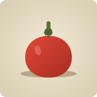
Tomàquet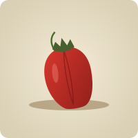
Pebrot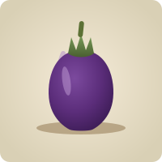
Albergínia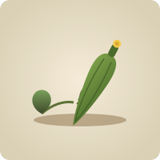
Carabassó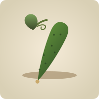
Cogombre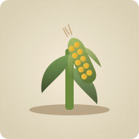
Blat de moroGira-solEnciamEscarolaEspinacBledaRúculaCanongesRaveApi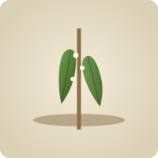
Mongeta tendraMongeta secaPèsolSojaPorroMoniato (batata)Basilic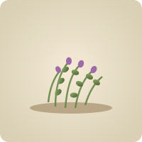
Orenga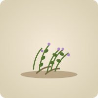
FarigolaSàlvia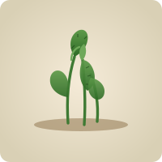
MentaEspígol (lavanda)JulivertCibuletAnet (anís)Coriantre🤝 Al costat de què
Els veïns bons i dolents dels cultius que pots posar ara mateix. Veure la taula completa →
🔎 El diagrama del mes: Espinac
El cultiu al mig, els bons veins a l'esquerra i els dolents a la dreta.
🧺 Receptes de bancal
Combinacions ja quadrades amb les seves associacions.
El bancal antimosca
La ceba (o el porro) confon la mosca de la pastanaga: la fitxa diu que redueix el 60-80 % dels danys. L'enciam aprofita els buits i no competeix.
Amanides de tardor
Es cullen del mateix bancal i al mateix ritme. Un rave enmig fa de marcador de fileres i madura en 30-70 dies.
El bancal de cols
L'api repeleix la papallona de la col; remolatxa i espinac omplen els espais. A les vores, una filera de rave com a planta trampa.
Lleguminoses que donen nitrogen
La fava fa ombra i fixa nitrogen; espinac i pastanaga ho aprofiten al costat. Aquí no hi posis ceba ni all: les inhibeixen.
Els marges aromàtics
Vorejant els bancals: atrauen insectes beneficiosos. L'anet, millor lluny de les pastanagues.
🥬 Tots els cultius
37 fitxes amb calendari, sembra, conreu, plagues i collita.
Alfàbrega
Lamiàcies (labiades)
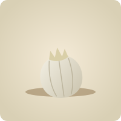
AllAmaril·lidàcies (abans Liliàcies, AlliàcApi
Umbel·líferes (Apiàcies)
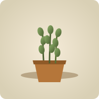
aromatiquesBlat de moro
Bleda
Amarantàcies (abans Quenopodiàcies)Broquil
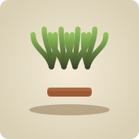
CalçotCanonges
Carabassó
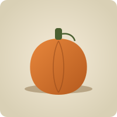
CarbassaCeba
Cogombre
Col
Brassicàcies (abans Crucíferes)Enciam
Escarola
Compostes (Asteràcies)Espinac
Quenopodiàcies (abans)Farigola
LamiàciesFava
Lleguminoses (Fabàcies)
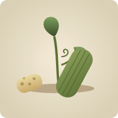
Lufa o esponja vegetal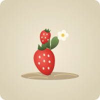
Maduixa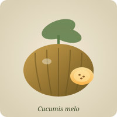
MelóCucurbitàciesMenta
LamiàciesMongeta
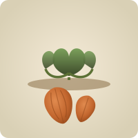
Moniato o boniato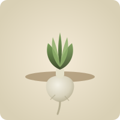
NapOrenga
LamiàciesPastanaga
Patata
Solanàcies (mateixa família que tomàquetPebrot
Pèsol
Lleguminoses (Fabàcies)Porro
Amaril·lidàcies (Alliàcies)Rave
Crucíferes (Brassicàcies)Romaní
LamiàciesRúcula
Tomàquet
📚 La resta del fons
Guies, plans mensuals, plagues, conserves i remeieres.